cardinal > designer
constructed a brand book for a series A startup, scaling a paper concept to help customers make better sales decisions.
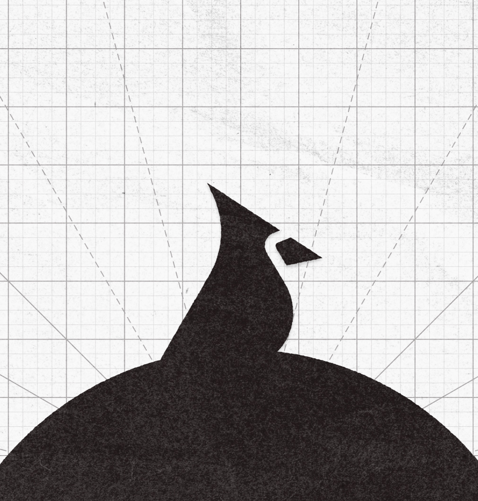
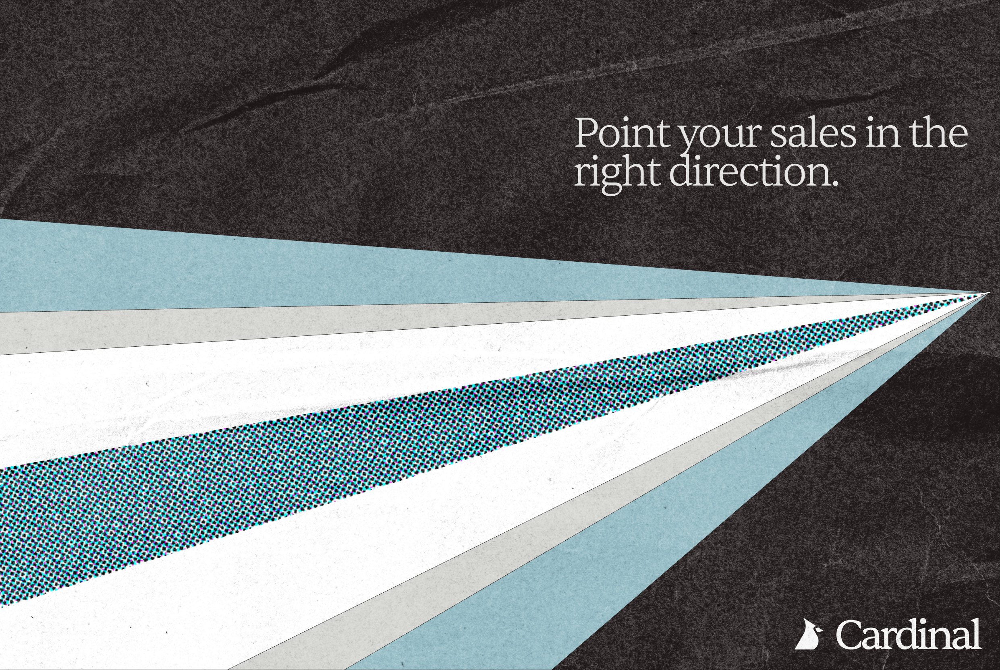
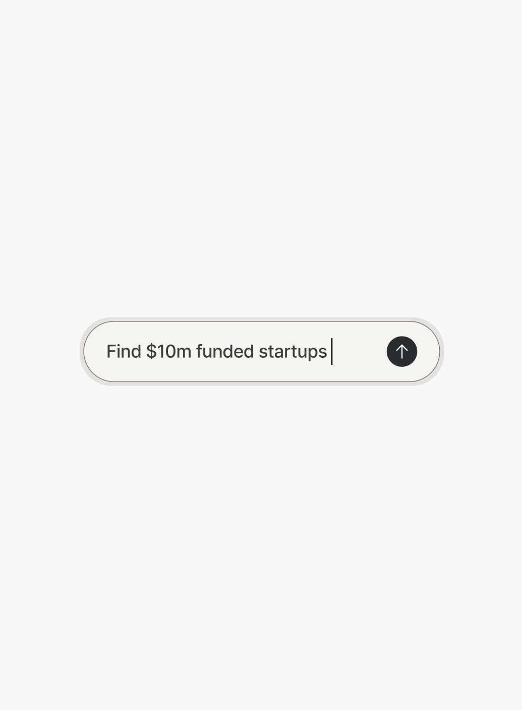
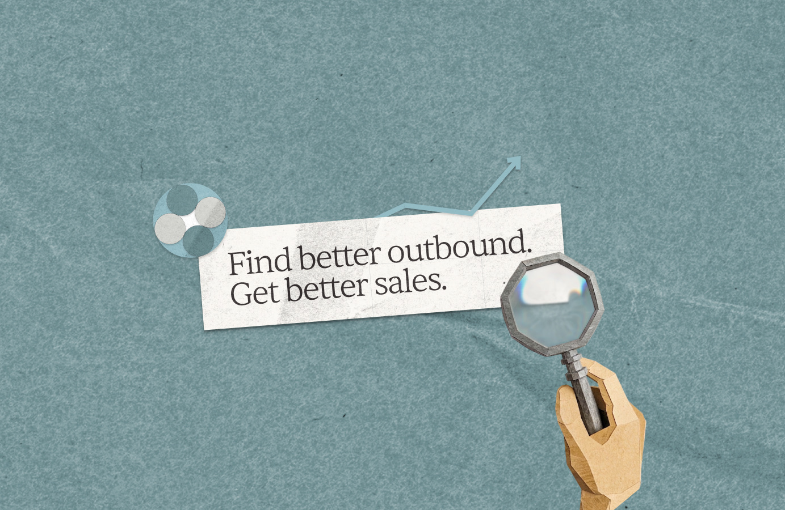
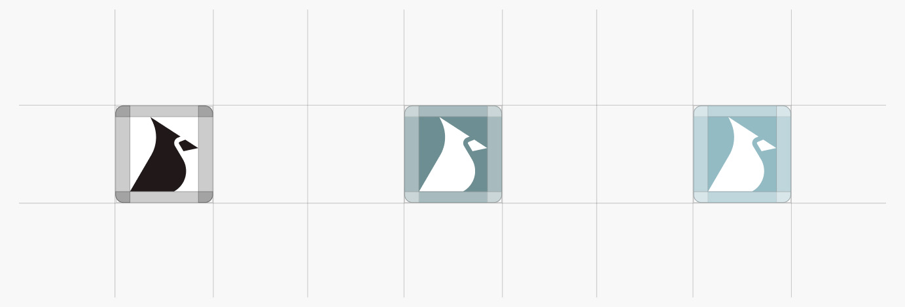
context - mission
cardinal is an ai revenue platform built for sales and go-to-market teams, straight out of y-combinator. founded by two-time yc founders, cardinal was looking a fresh brand book to hand-off to partners and design clients.
i touched on mostly public-facing assets (ex. linkedin posts, billboards, posters), but also website tokens like typography, padding, color palette, and iconography.
final assets
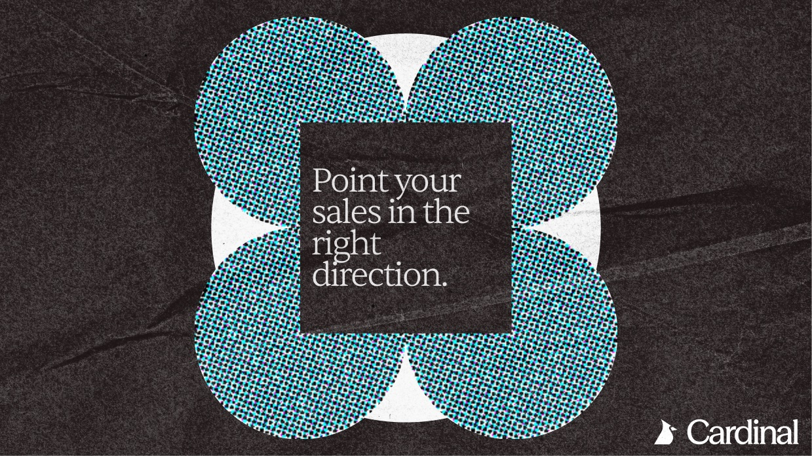
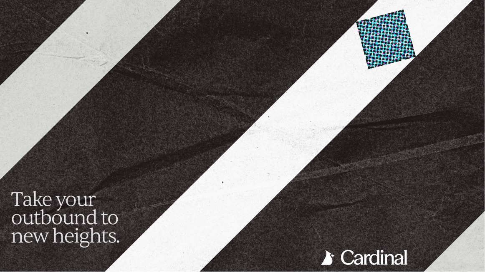
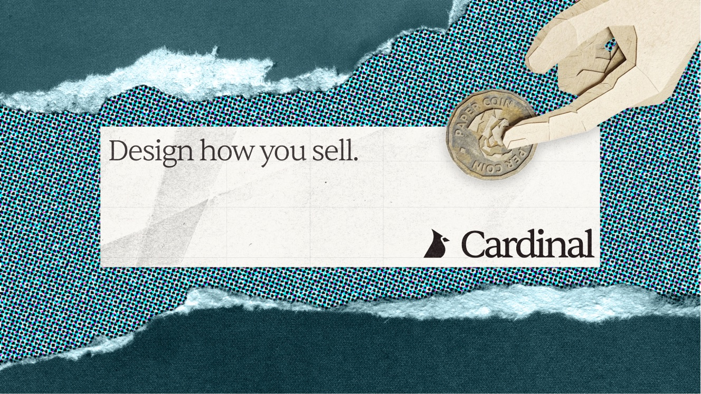
posters
staying true to cardinal’s torn paper/mache concept, i found ways to weave language into visual abstraction.
large shapes and focal points help onlookers read for our central message.
design context
to help develop new design tokens for our website, i tested different (and more affordable) typography and color options.
our team ended up preferring this blue wash, given its soothing hue and readability.
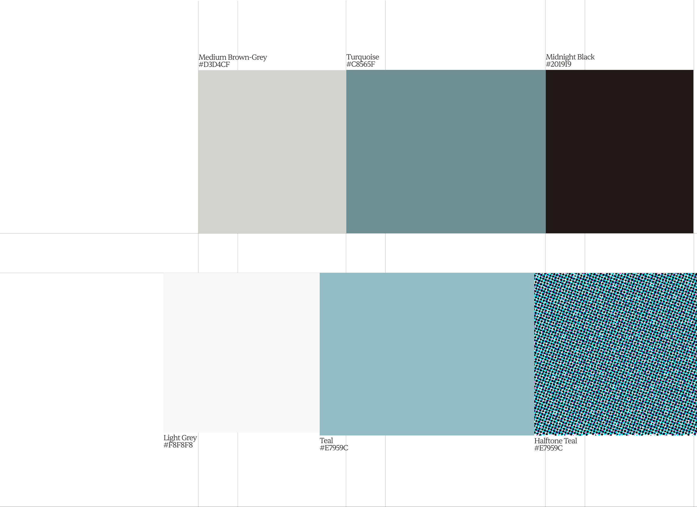
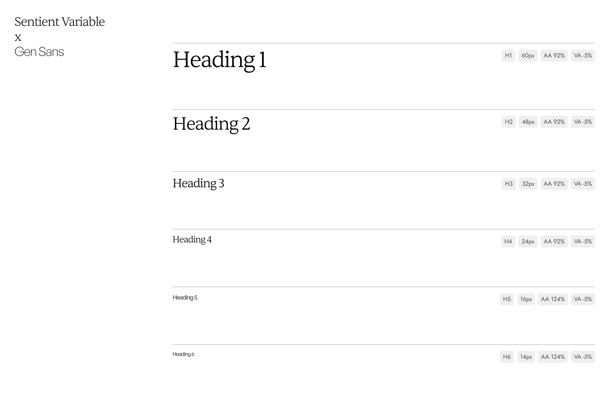
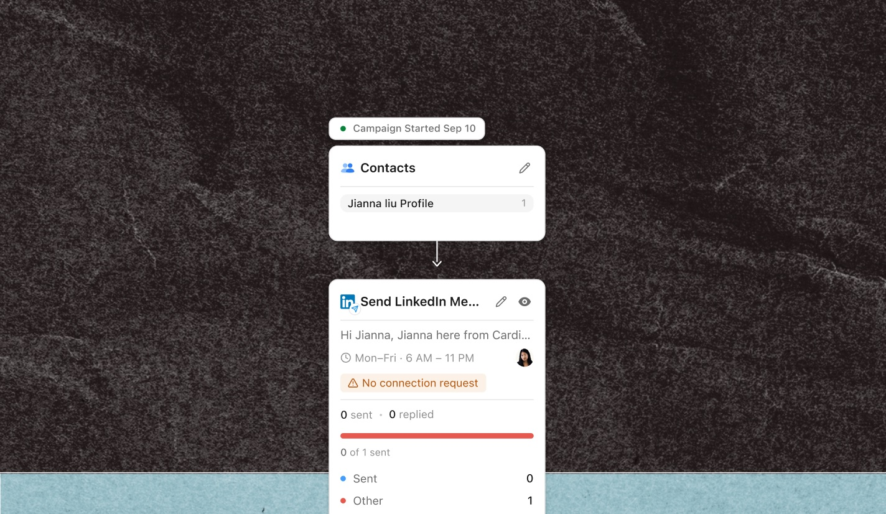
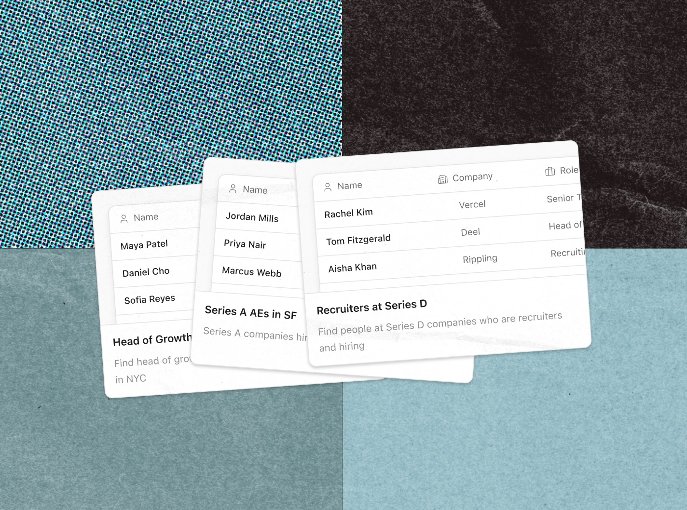
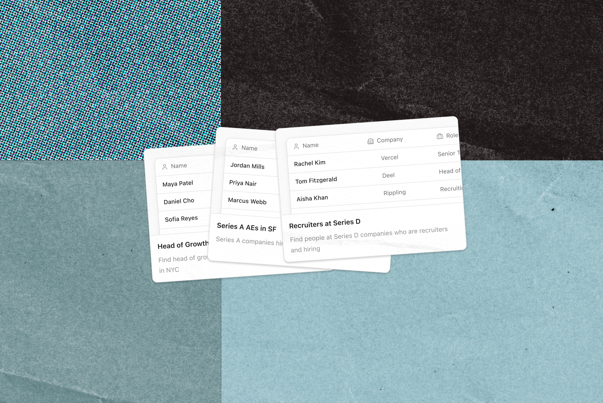
product assets
these are replicable visuals to show impactful processes for users.
i selected modals that could potentially tell a story about our product: finding leads on customers and businesses.
iconography
i reimagined logo display and isolation -- mainly focusing on geometric lines and paper-textured ridges while editing.
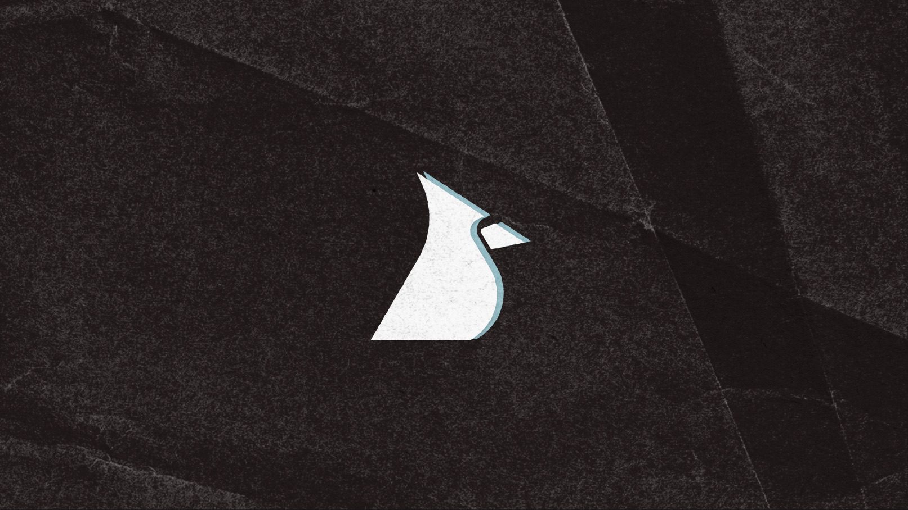
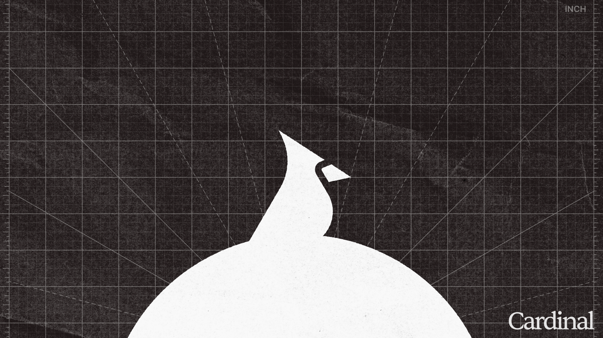
value points and takeaways
- start building anything. creative roadblocks happen, but never sit around waiting for a good idea -- chase inspiration.
- never feel ashamed about a design before showing it to someone else, maybe they’ll actually like it more than the design you prefer.